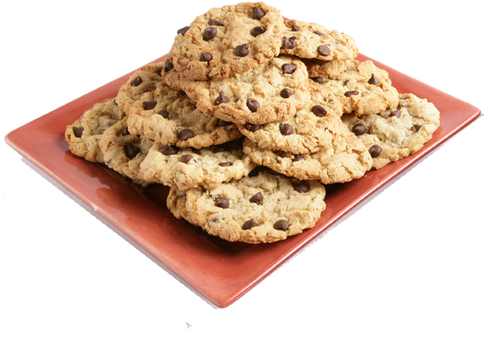

Chocolate Chip Cookies

Description
These chewy chocolate chip cookies are the pinnacle of perfection! If you want a big, fat, soft, and chewy cookie like the kind you see at bakeries and specialty shops, then this is the recipe for you!
Ingredients
- 2 cups all-purpose flour
- 2½ teaspoon baking soda
- 2½ teaspoon salt
- 21 cup packed brown sugar
- 2¾ cup unsalted butter, melted
- 2½ cup white sugar
- 21 egg
- 21 egg yolk
- 21 tablespoon vanilla extract
- 22 cups semisweet chocolate chips
Steps
- Preheat the oven to 325 degrees F (165 degrees C). Grease cookie sheets or line with parchment paper.
- Sift flour, baking soda, and salt together; set aside.
- Beat brown sugar, melted butter, and white sugar with an electric mixer in a large bowl until smooth. Beat in egg, egg yolk, and vanilla until light and creamy; add flour mixture and stir until dough is just combined. Stir in chocolate chips.
- Drop spoonfuls of dough 3 inches apart onto the prepared baking sheets.
- Bake in the preheated oven until edges are golden, about 15 to 17 minutes. Cool on the cookie sheets briefly before transferring them to a wire rack to cool completely.